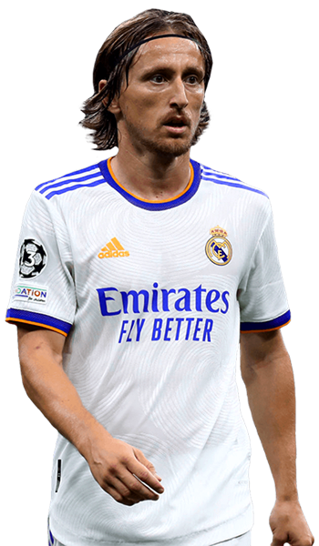
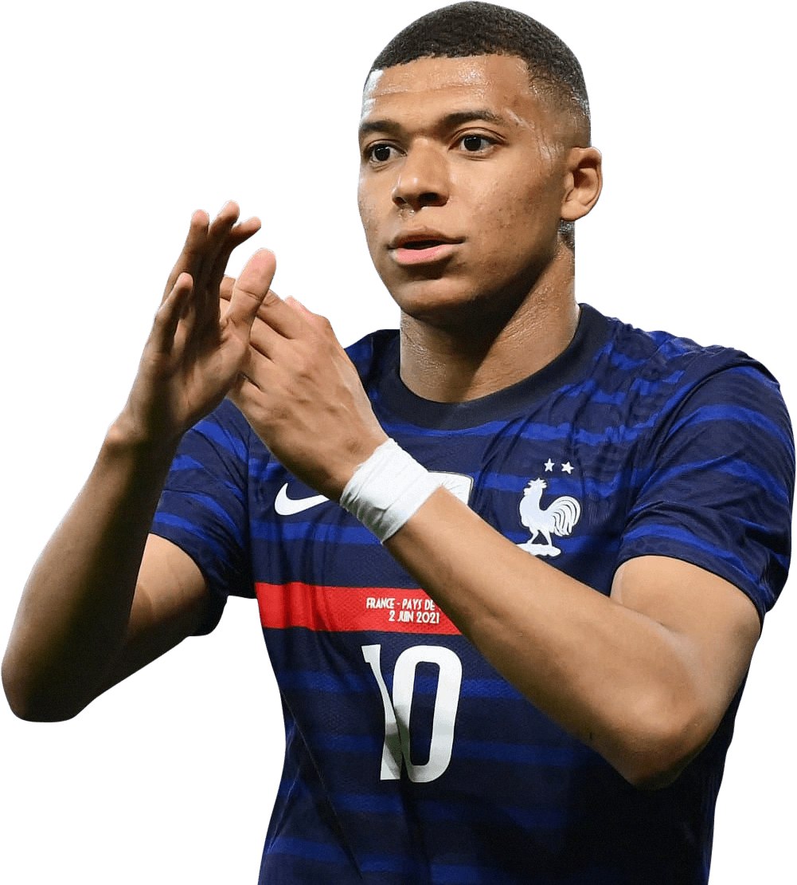

هاري كين هو هداف كأس العالم ب 6 أهداف و ساهم في وصول منتخب بلاده للدور نصف النهائي .. أحرز في تونس هدفين و في بنما 3 أهداف و في كولومبيا هدف و لكن كين هو أسوأ هداف في تاريخ كأس العالم حيث أنه أحرز 3 أهداف من أصل 6 عن طريق ضربات جزاء

هاري كين هو هداف كأس العالم ب 6 أهداف و ساهم في وصول منتخب بلاده للدور نصف النهائي .. أحرز في تونس هدفين و في بنما 3 أهداف و في كولومبيا هدف و لكن كين هو أسوأ هداف في تاريخ كأس العالم حيث أنه أحرز 3 أهداف من أصل 6 عن طريق ضربات جزاء
لوكا مودريتش هو أفضل لاعب في البطولة بعد أن أوصل كرواتيا للمرة الأولي في تاريخها الي نهائي كأس العالم .. حيث أحرز هدف في أول مباراة ضد نيجيريا و في ثاني مباراة يحرز هدف مهم ضد الأرجنتين و في ربع النهائي يصنع هدف في غاية الأهمية لفيدا في الوقت الاضافي ليصل لركلات الترجيح و يحرز ركلة الفوز .. وبالطبع لا ننسي دور موريتش في بناء الهجمات و صناعة الفرص و التمريرات المفتاحية

كورتوا هو أفضل حارس في البطولة بعدما تصدي لكرة مهمة و صعبة جدا في مباراة صعبة ضد البرازيل من نيمار و بسببها كان سيتم اقصاء المنتخب البلجيكي من البطولة ولعب كورتوا دورًا كبيرًا في حصول منتخب بلجيكا للمرة الاولى في التاريخ على المركز الثالث والميدالية البرونزية في بطولة كأس العالم
 ملخص ما قدمه كورتوا في البطولة
ملخص ما قدمه كورتوا في البطولة
كيليان مبابي هو أفضل لاعب شاب في البطولة 19 سنة بسرعته الخارقة كان يعتمد عليه ديشامب المدير الفني للمنتخب الفرنسي في إنجاح خطته و هي الهجمات المرتده إضافة لذلك أنه لاعب يعرف كيفية التصرف الصحيح في التلت الأخير و يستغل المساحة التي يصنعها له جيرو و يلعب جناح أيمن و و أيسر و رأس حربة .. أحرز 4 أهداف في كأس العالم
 ملخص ما قدمه كيليان مبابي في البطولة
ملخص ما قدمه كيليان مبابي في البطولة